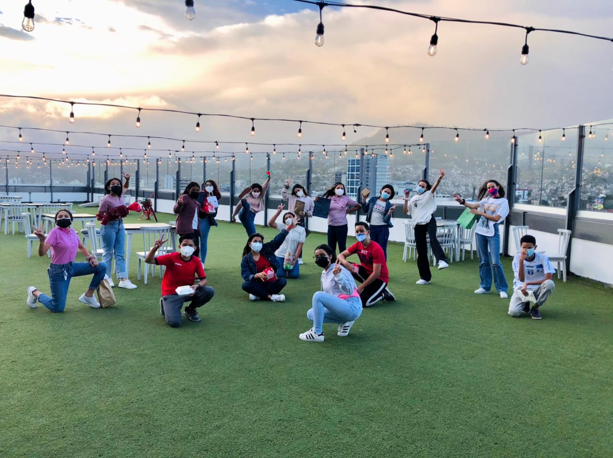
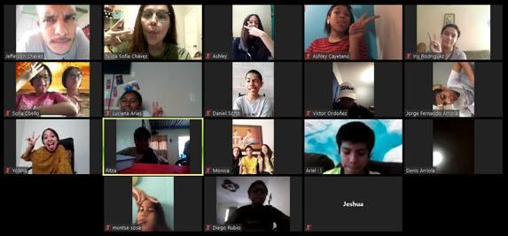

what it is Youth Vision you may be asking, well... we are a gropu of teenagers

that has a different vision from the rest.
This is the time of our lives that serves to determine who we are. At this point in our lives we set goals regarding our studies
build up and strenthen our character
Because of all this changes being a
a teenager may be confusing, frustrating, disappointing etc. but God can guide Us in his paths and
how to control all of this emotions, and not letting them control our lives.
Many people thinks being a follower of Christ is borring and that it takes you all of your time but
that is a wrong idea, actually it is quite the opposite...

They are plenty of things you can do
without displeasing God, disobeying his Word and you can serve and give him honor while doing them.
Youth Vision has Social media and now a Web Site designed to cath all the attention of teenagers as possible
to get them to know how they can change there lifestyle to a maner that honors God, and to get them
to know how Much he loves each one of us! By having activities such as Zoom meetings in where we talk
with eachothers, and receive devotionals and learn about of God and His Word. These online meetings start being organized
due to corornavirus quarantine but now each month we are meeting face-to-face again! Many more activities have
been done to cath up all the attention of teenagers possible and taking them to the kingdom of God; some have been already mentioned
before and you can see more on the page of Activities from Youth Vision.